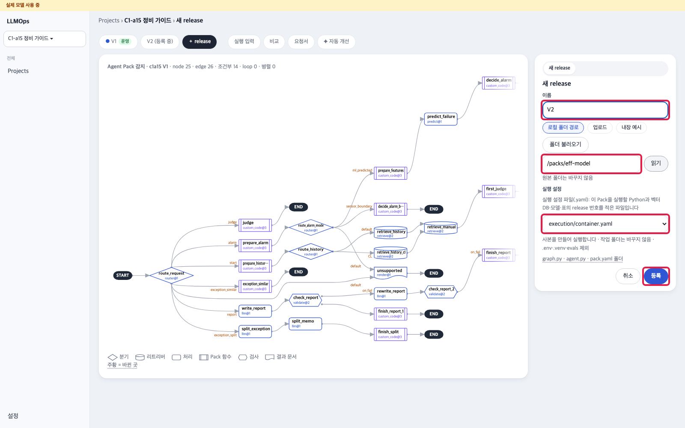
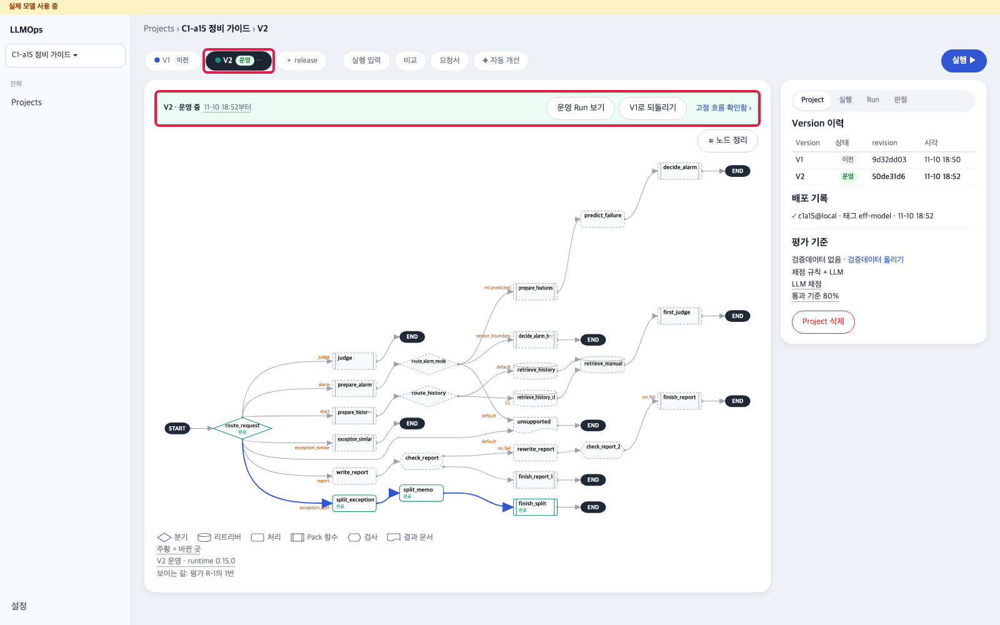
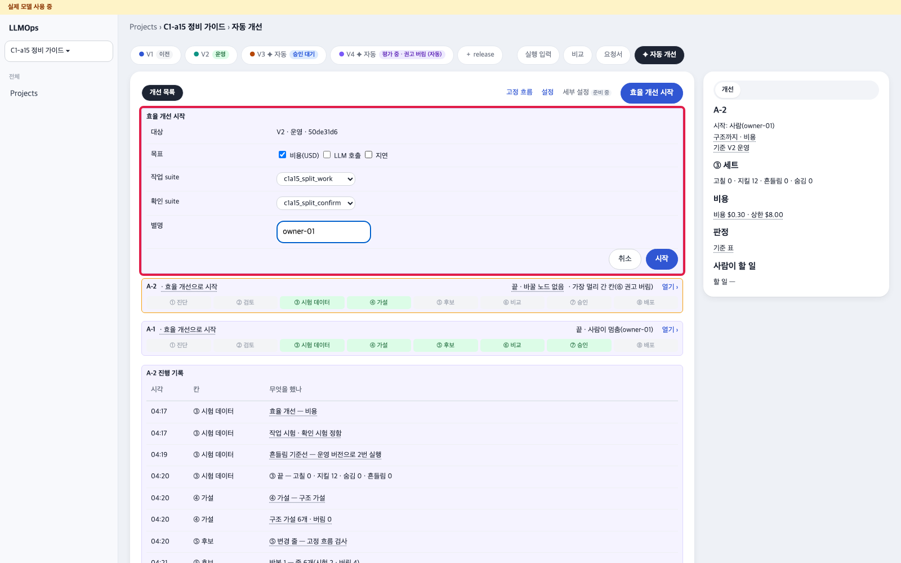
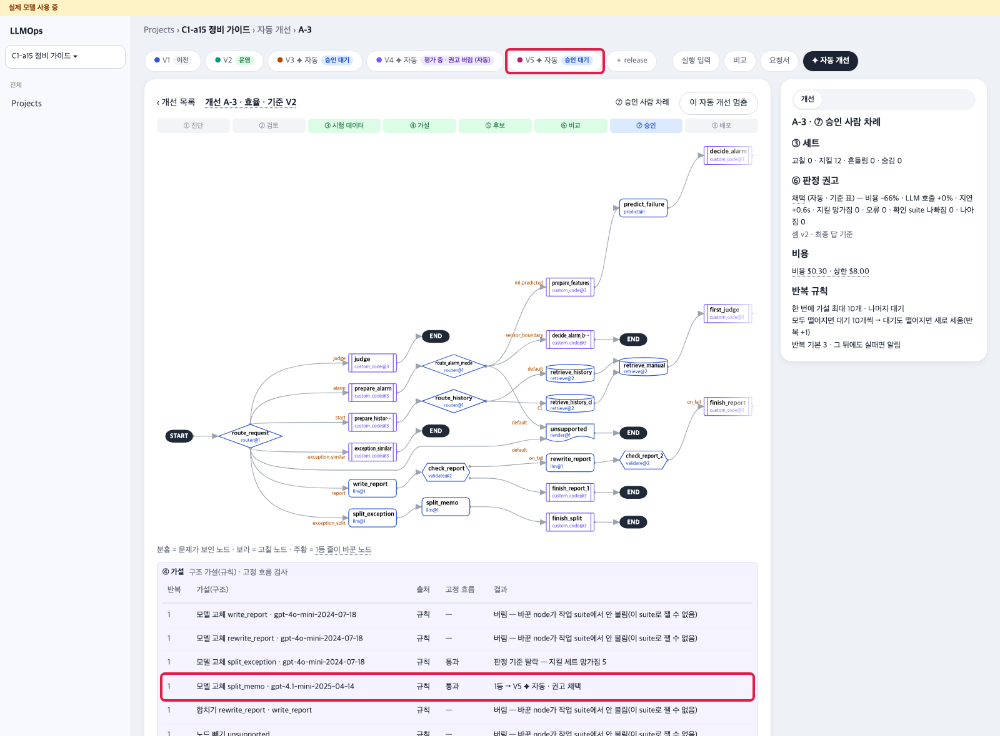
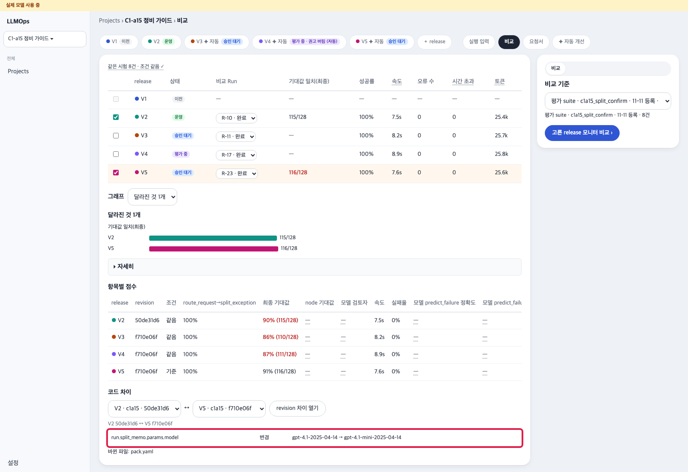
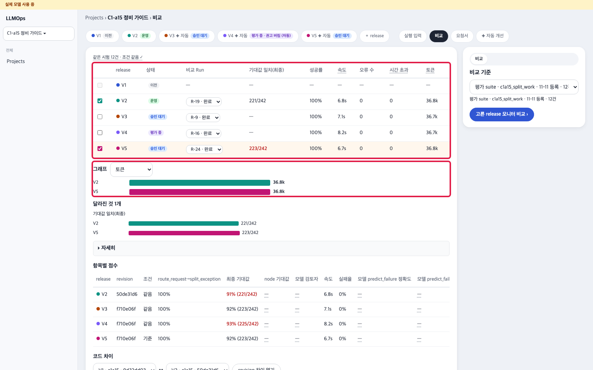
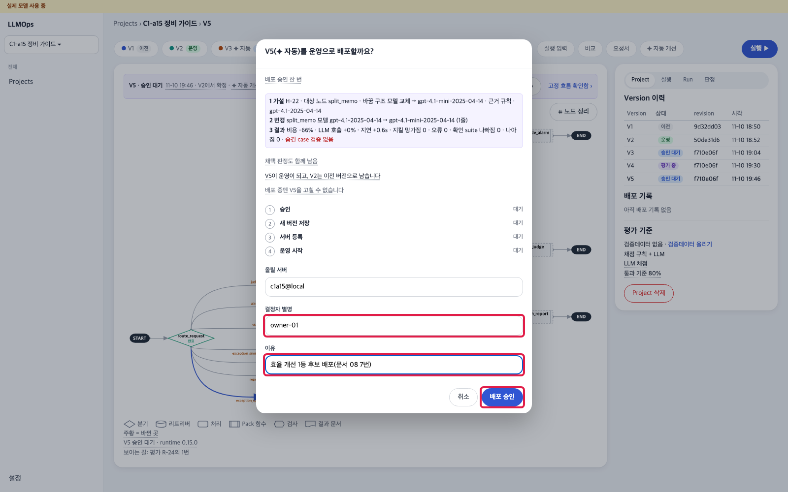
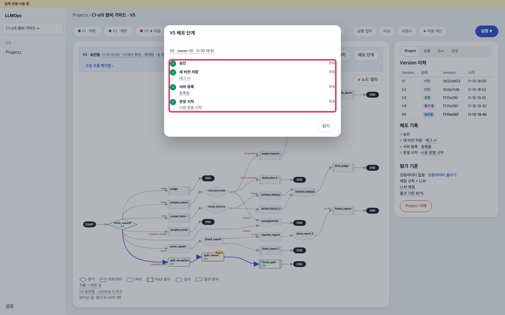

읽는 법 · 파란 칸 화면에 보이는 단추 · 글자(누름) · 노란 칸 직접 칠 글 · 검은 상자 터미널 명령(복사해 붙여 넣기) · 빨간 점선 상자 화면 그림(빨간 테 = 누를 곳) · 확인 필요 아직 정해지지 않은 값
출발 Pack 둘 — 처음 켤 때 kg-init이 만들어 둠(명령 없음)
/packs/eff-model ① 결과에 쓰이지 않는 보조 메모 단계가 비싼 모델(gpt-4.1)을 한 번 더 부름
/packs/eff-structure ② 같은 보고서 문장을 두 번 씀
효율 개선이 이런 곳을 찾아 고치는지 같은 시험으로 확인합니다.
1출발 Pack 등록 AgentOps
할 일
＋ release → 이름 칸에 다음 번호 V<n>(예: 앞 버전이 V2까지면 V3) → 로컬 폴더 /packs/eff-model(②는 /packs/eff-structure) · 실행 설정 execution/container.yaml → 등록
보일 것
위 탭 줄에 새 버전 'V2 · 평가 중'(첫 상태에서 하면 V2) · 가운데 그래프에 split_memo 단계

＋ release 창 — 출발 Pack · 빨간 테: 폴더 경로 · 실행 설정 · 등록
2시험 묶음 둘 · 첫 평가 · 고정 흐름 AgentOps
할 일
문서 04 4번과 같은 칸에서 두 묶음 등록 — ① c1a15-split-work(12건) · c1a15-split-confirm(8건) / ② c1a15-report-work-v4(13건) · c1a15-report-confirm-v4(13건)
출발 버전에서 실행 ▶ 한 번 → 고정 흐름 확인(문서 04 6번)
보일 것
두 묶음 등록됨 · 출발 버전 Run 한 줄(① split-work: 12/12 · 실패 0) · 띠 '고정 흐름 확인함 ›'
알아 둘 것
두 번째 묶음을 등록한 뒤에도 '등록됨' 글이 앞 묶음 이름으로 남아 보일 수 있습니다(화면 표시만 그렇고 등록은 됨). 위 표에 두 줄이 있는지로 확인합니다.
3출발 버전을 운영으로 — 배포 승인 대신 대본 한 줄 터미널 · AgentOps
할 일
저장소 폴더에서 아래 한 줄(②는 eff-structure)
대본이 하는 일: ⓪ 먼저 확인만(이 스택에 배포 승인이 없는지 · 1번 버전이 등록됐는지 — 아니면 아무것도 바꾸지 않고 멈춤) ① 배포 서버를 출발 Pack으로 바꿈(서버만 다시 켬 · revision 대조) ② AgentOps에 1번에서 등록한 버전을 운영으로 기록 ③ 보통 알람 한 건(M-01) — 다음 배포 승인이 '지금 돌리는 버전'을 이 기록으로 찾음
AgentOps 화면 새로 고침
scripts/efficiency-start.sh eff-model
출력 예
⓪ 확인: AgentOps가 운영 줄을 받을 수 있는지(배포 서버는 아직 그대로)
agentops-operational --check · 전환 뒤 운영 줄 쓸 수 있음 · eff-model … · c1a15@local
① 배포 서버 → eff-model
… 바꿔 띄움 first → eff-model · 2.3초 · … · revision …
PACK_SWITCH ok · … → eff-model … · drs … 그대로 · …
② AgentOps 운영 줄(배포 서버 /info와 같을 때만)
agentops-operational · 운영 줄 씀 · eff-model … · c1a15@local
agentops-operational · 운영 V2 · 고정 흐름 확인함
③ 보통 알람 한 건(M-01)
{"ref": null, "alarm_id": 1, … "symptom_group": "CL"}
끝 — AgentOps 화면을 새로 고치면 출발 버전이 '운영'입니다(설치 안내 08-2로)
걸린 7초
보일 것
⓪ 줄에 '전환 뒤 운영 줄 쓸 수 있음' · ① · ② · ③ 줄 · 끝 줄 · 7초 안팎 · 새로 고치면 1번 버전 탭 'V2 · 운영' · 띠에 운영 Run 보기 · V1로 되돌리기 · 오른쪽 배포 기록 '태그 eff-model'
막히면
⓪ '멈춤 — 이 스택에는 이미 배포 승인(설치 안내 07)이 있습니다' → 정확도(07)를 한 스택 · 문서 09로 첫 상태 → 04 1 ~ 8번 → 이 문서 1번부터 · ⓪ '멈춤 — /packs/…를 화면에서 ＋ release로 먼저 등록하세요' → 1번을 먼저 · ①에서 멈춤 → docker compose logs pack-server --tail 50
알아 둘 것
효율 개선은 운영 중인 버전에서만 시작합니다. 출발 버전은 화면의 배포 승인 ▶로는 운영이 되지 않습니다(등록 폴더 버전이라 배포 서버 쪽 길이 없음) — 이 대본을 씁니다. 1번 이름 칸이 V 숫자 형식이 아니면 운영 줄이 맞지 않으니 V<n>으로 등록합니다.

대본 뒤 출발 버전 운영 · 빨간 테: V2 운영 탭 · 띠
4효율 개선 시작 AgentOps
할 일
위 탭 ✦ 자동 개선 → 오른쪽 위 효율 개선 시작 → 창: 대상(운영 버전이 저절로 · 예 'V2 · 운영') · 목표(처음엔 비용 · LLM 호출 · 지연 셋 다 체크됨) ① 비용(USD)만 / ② LLM 호출만 남기고 나머지 체크를 끔 · 작업 suite ① c1a15_split_work / ② c1a15_report_work_v4 · 확인 suite ① c1a15_split_confirm / ② c1a15_report_confirm_v4 · 별명 owner-01 → 시작
개선 A-1 화면의 단계 줄 ① 진단 ~ ⑧ 배포가 차례로 진행되다 '⑦ 승인 · 사람 차례'에서 멈춤(약 15분)
⑤에서 '사람 확인 필요 — 줄 n 품질 검토'로 멈추면 — 화면 위에 사람 확인 — 줄 n 통과 · 버림 칸이 뜸(Jev 품질 검토가 사람에게 넘긴 것 · 주로 ②): 그 줄 숫자(지킬 · 비용 · LLM 호출 · 지연)가 기준 안 — 지킬 망가짐 0(예 지킬 10/10)이고 비용 · 호출 · 지연이 출발보다 줄었으면 사람 확인 — 줄 n 통과 → 창에 별명 · 까닭 → 통과 · 아니면 버림 → 같은 창 → 버림(그 줄을 빼고 다음 줄로) → 단계 줄이 이어 감(예 ② 첫 사용자 걷기: 지킬 10/10 · LLM 호출 2.23 → 1.23 · 지연 4.9 → 3.5초 → 통과)
보일 것
가설 표 1등 줄 — ① '모델 교체 split_memo · gpt-4.1-mini … 1등 → V3 ✦ 자동 · 권고 채택' / ② 두 번째 보고서 단계 빼기 · 위 탭 '✦ 자동 · 승인 대기' 새 버전(다시 돌렸으면 번호가 올라감 · 그림은 세 번째 개선 A-3의 V5) · 오른쪽 판정 권고 · 비용
막히면
효율 개선 시작이 눌리지 않음 → 앞 개선이 '승인 대기'로 열려 있음 · 그 개선의 이 자동 개선 멈춤 뒤 다시(3번 대본으로 운영을 바꾸면 앞 개선은 저절로 '끝 · 기준 버전 바뀜'이 되어 이 단추가 없음 · 새로 고침 뒤 바로 눌림) · 개선이 '끝 · 바꿀 노드 없음'(후보가 모두 탈락) 또는 '⑥ 권고 버림 — 확인 suite 나빠짐 0'으로 끝남 → 확인 묶음은 운영 · 새 버전을 한 번씩만 돌려, 다시 쓰기 같은 AI 답이 흔들리면 권고 버림 · 채택 안 됨이 나올 수 있음(같은 버전도 여러 번 중 몇 번 틀림 · '확인 suite 나빠짐 0'은 떨어진 기준의 이름이고 실제 수는 판정 기준 줄 예 '7 / 13 통과 · 나빠짐 2') · 그때는 효율 개선을 다시 돌림(최대 3번 · 4번 효율 개선 시작부터) · 세 번 모두 같으면 멈춤 · ⑤에서 '품질 검토 못 함 — decide_no_key_file'로 멈춤 → .env에 Jev 두 줄(문서 02 4번)을 넣고 docker compose up -d 뒤 다시 · 또는 LLMOPS_AUTO_REVIEW=off(품질 검토 없이)
알아 둘 것
자동 판정이 흔들림 한 건으로 ✦ 자동 버전을 만들지 않을 때가 있습니다. 그때는 다시 돌리거나(6번 막히면), 1등 줄과 같은 편집(모델 바꾸기 · 단계 빼기)을 사람 편집으로 만들어 이어 갑니다.

효율 개선 시작 창 → 결과의 가설 표 · 빨간 테: 시작 창 · 1등 줄

효율 개선 시작 창 → 결과의 가설 표 · 빨간 테: 시작 창 · 1등 줄
② 첫 사용자 걷기 기록 — 세 번 모두 채택 안 됨(있는 그대로)
확인 시험(확인 suite)은 운영 버전과 새 버전을 한 번씩만 돌려 사례마다 견줍니다. 다시 쓰기 단계 같은 AI 답이 한 번 흔들리면, ✦ 새 버전이 생겨도 '⑥ 권고 버림 — 확인 suite 나빠짐'으로 끝나 채택되지 않을 수 있습니다. 고장이 아니고 다시 돌리면 됩니다(4번 막히면 · 최대 3번). 첫 사용자 걷기(첫 상태 · Jev 있음)의 ② 세 회차는 아래와 같았고, 세 번 모두 기준 밖이라 문서대로 멈췄습니다.
1회: 약 12분 · '끝 · 바꿀 노드 없음'(✦ 버전 없음) · 개선 안 AI 요금 $0.08
2회: ⑤에서 '사람 확인 필요 — 줄 13 품질 검토'로 멈춤 → 사람이 사람 확인 — 줄 13 통과 → V3 ✦(두 번째 보고서 단계 빼기 · 지킬 10/10 · LLM 호출 2.23 → 1.23 · 지연 4.9 → 3.5초) → ⑥ '권고 버림 — 확인 suite 나빠짐' → 끝 · $0.12
3회: 약 15분 · V4 ✦ → ⑥ '권고 버림 — 확인 suite 나빠짐' → 끝 · $0.12
⑤에서 '사람 확인 필요 — 줄 N 품질 검토'로 멈추면 개선 화면 위 사람 확인 — 줄 N 통과 또는 버림으로 이어 갑니다(고르는 법은 4번 할 일 3).
5새 버전 · 버전 차이 AgentOps
할 일
새 버전 탭 → 변경 내용(diff) → revision 차이 열기
보일 것
① 'run.split_memo.params.model 변경 gpt-4.1-2025-04-14 → gpt-4.1-mini-2025-04-14' · 바뀐 파일 pack.yaml 한 줄 / ② write_report_dup 노드 삭제 · 연결 write_report → check_report

비교 화면 아래 코드 차이 — 바뀐 곳 · 빨간 테: 바뀐 곳
6같은 시험으로 비교 AgentOps
할 일
새 버전 → 입력 고르기에서 원래 묶음(① split-work · split-confirm / ② report-confirm-v4) → 실행 ▶ → 출발 버전의 같은 묶음 Run과 비교 화면
비교 그래프의 기본 지표는 'LLM 점수' 또는 '기대값 일치'로 보임('LLM 점수'면 평가 suite Run은 막대가 비어 있음) → 그래프 지표에서 토큰 · 속도를 고름 · 비용은 비교 화면에 칸이 없고 개선 화면 오른쪽에 있음
보일 것
① 이 회차 값(Run마다 조금 다름): 확인 묶음 split-confirm 기대값 일치 115/128 → 116/128 · 성공률 100% · 오류 0 / 작업 묶음 split-work 221/242 → 223/242 · 속도 6.8 → 6.7초 · 토큰 36.8k 같음 · 실패 0 — 정확도 유지 · 개선 화면 오른쪽 권고에 비용 약 66% 감소
막히면
확인 묶음 기대값이 출발 버전보다 낮게 나옴(통과 기준 밖) → 채택 · 배포하지 않음 · AI 답의 흔들림이라 기준 안 회차가 나올 때까지 다시 돌려도 됨(최대 3번): 그 개선의 이 자동 개선 멈춤 → 4번 효율 개선 시작부터 · 세 번 모두 기준 밖이면 멈추고 출발 Pack · 묶음을 다시 봄

같은 시험 비교 표 · 그래프(토큰) · 빨간 테: 두 버전 체크 · 기대값 일치 · 그래프 지표
7채택 → 배포 승인 AgentOps
할 일
6번 비교가 통과 기준 안이면 사람이 채택 — 새 버전 띠의 배포 승인 ▶
창의 가설 · 변경 · 결과('비용 -66% · LLM 호출 +0% · … 지킬 망가짐 0 · 오류 0 · 확인 suite 나빠짐 0')를 읽고 결정자 별명 · 이유 → 배포 승인
네 단계(승인 · 새 버전 저장 · 서버 등록 · 운영 시작) ✓를 봄(약 4분)
보일 것
창의 ✓ 넷 · 오른쪽 배포 기록 '✓ 승인 · ✓ 새 버전 저장 · 태그 v1 · ✓ 서버 등록 · ✓ 운영 시작' · 3번 대본이 알람을 한 건 넣어 두어 '보통 Run 먼저' 거부 없이 바로 됨
알아 둘 것
효율 개선을 여러 번 돌려 같은 변경이 버전 여럿(V3 · V4 · V5)으로 생기면 내용(revision)이 같습니다. 화면은 그중 처음 만든 버전을 '운영'으로 보이고, 배포 승인한 버전은 '승인됨'으로 남습니다 — 배포된 Pack은 같습니다(고장 아님). 한 버전만 보이게 하려면 첫 상태(문서 09)에서 한 번에 통과한 회차로 합니다.

배포 승인 창 · 네 단계 ✓ · 빨간 테: 결정자 별명 · 이유 · 배포 승인 · 네 단계

배포 승인 창 · 네 단계 ✓ · 빨간 테: 결정자 별명 · 이유 · 배포 승인 · 네 단계
통과 기준
품질 칸 전부 같거나 높음 — 기대값 일치 · 기계 검사 칸(check_report 등) · 성공률(실패율은 같거나 낮음)
사례 실패 0
비용 또는 토큰 · 속도가 좋아짐
사람이 비교를 보고 채택
다시 하려면문서 09로 첫 상태로 돌린 뒤 1번부터. 효율 출발 버전 · 개선 기록이 남은 채로 같은 출발을 다시 등록하면 배포가 막힙니다.